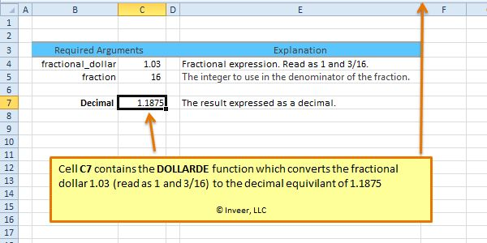
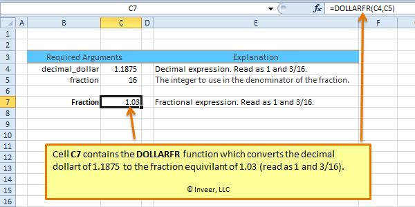
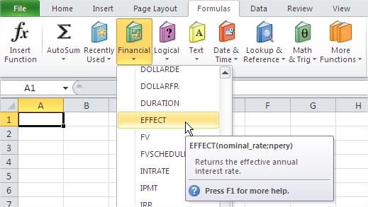
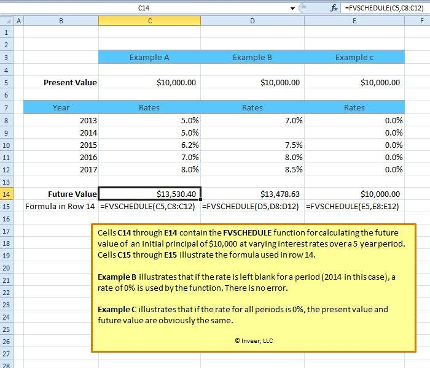
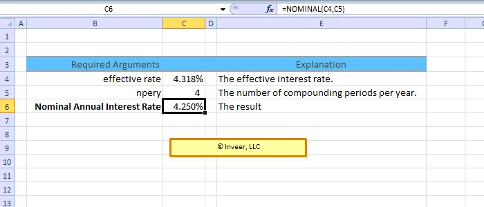

EFFECT, NOMINAL, FVSCHEDULE, DOLLARDE
Mengubah bunga nominal menjadi efektif dan sebaliknya, serta menghitung pertumbuhan dengan bunga yang berubah-ubah.
Coba langsung di browserLembar kerja mini, kuis, dan tanda selesai.
Buka versi interaktif=EFFECT(nominal; per_tahun) =NOMINAL(efektif; per_tahun)
| nominal | Bunga nominal tahunan |
|---|---|
| per_tahun | Berapa kali bunga dimajemukkan dalam setahun |
Langkah praktik
- =EFFECT(12%;12) menghasilkan bunga efektif sekitar 12,68%.
- =NOMINAL(12,68%;12) mengembalikannya ke 12%.
- FVSCHEDULE menghitung nilai akhir bila bunga tiap tahun berbeda.
Tangkapan layar praktik
5 gambar langkah demi langkah. Klik gambar untuk membuka ukuran penuh.




